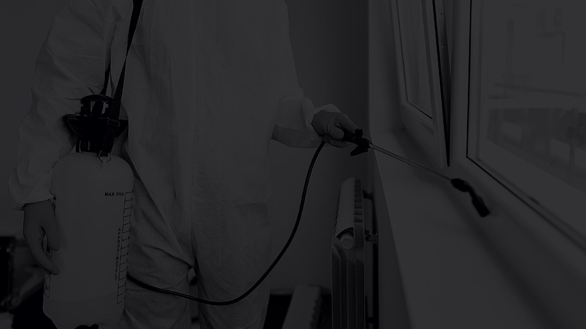
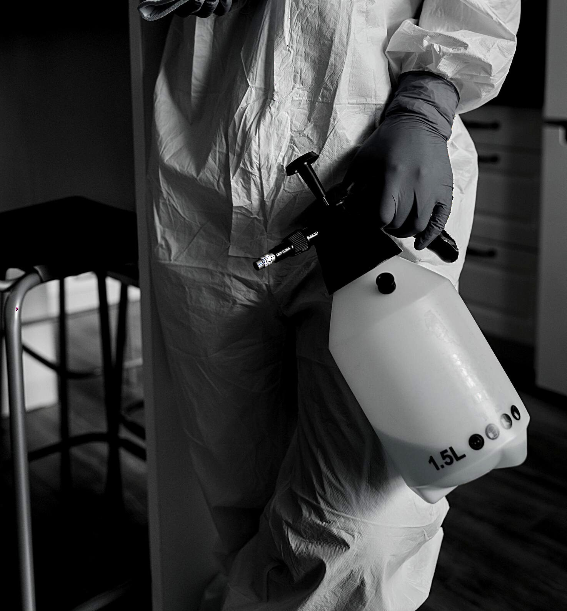

01Control de plagas
Atención preventiva y correctiva para insectos rastreros y voladores, con soluciones adaptadas al espacio y al tipo de problema.
Solicitar servicio →En INSEX Fumigaciones atendemos hogares, oficinas, restaurantes, escuelas, transporte y negocios con soluciones especializadas en control de plagas, desinfección, sanitización y desratización.

INSEX Fumigaciones es una empresa especializada en control de plagas, desinfección y sanitización de áreas. Nuestra operación se basa en el compromiso con el cliente, el conocimiento técnico y una atención clara desde el primer contacto.
Cada tratamiento se define según el tipo de espacio, el nivel de infestación y la necesidad específica del cliente.
Atención preventiva y correctiva para insectos rastreros y voladores, con soluciones adaptadas al espacio y al tipo de problema.
Solicitar servicio →
Aplicación mediante equipos de pulverización manuales o motorizados, dependiendo de las dimensiones y condiciones del lugar.
Solicitar servicio →Tratamiento localizado para puntos estratégicos y control preciso en áreas sensibles o de difícil acceso.
Solicitar servicio →Alternativa útil para zonas donde no conviene utilizar insecticidas líquidos, como enchufes, tableros y espacios específicos.
Solicitar servicio →Aplicación especializada para espacios de alta afluencia y áreas de trabajo, orientada a ambientes más limpios y seguros.
Solicitar servicio →Soluciones preventivas y correctivas mediante estrategias adecuadas para instalaciones residenciales, comerciales e industriales.
Solicitar servicio →La estrategia se adapta a la zona a tratar, el nivel de acceso y las características específicas del servicio.
Aplicación con equipos manuales o motorizados para superficies y áreas específicas.
Uso de geles y soluciones puntuales en zonas estratégicas.
Alternativa funcional para instalaciones donde se requiere un método seco.
Atención para oficinas, escuelas, comercios y espacios de alta afluencia.
INSEX comunica seguridad, orden y confianza en cada punto de contacto con el cliente.
Atención profesional para hogares, comercios e instituciones.
Tratamientos enfocados en control, prevención y seguimiento.
Cada solicitud se revisa de acuerdo con el espacio y la necesidad del cliente.
Comunicación clara para seguimiento comercial y operativo.
Todos los contactos se canalizan por llamada, WhatsApp o correo corporativo.
Una marca más clara, uniforme y confiable para el cliente final.
Atención profesional adaptada a distintos tipos de instalaciones y giros.
El sitio está diseñado para que el prospecto explique su necesidad, comparta datos clave y continúe por WhatsApp o llamada con INSEX.

La empresa ha proyectado su experiencia en atención a organizaciones de diferentes giros y sectores.


Completa los datos y el sitio preparará automáticamente el mensaje para enviarlo al WhatsApp de INSEX.
Atendemos solicitudes por llamada, WhatsApp, correo corporativo y redes sociales.
Juriquilla, Santiago de Querétaro, Qro. 76230
INSEX atiende casa habitación, oficinas, escuelas, restaurantes, salones de fiestas, transporte, hoteles, bodegas y otros espacios comerciales o institucionales.
Control de plagas, insecticidas líquidos, geles específicos, polvos secos, sanitización y desratización.
Puedes llamar al 442 157 1646, escribir por WhatsApp o completar el formulario de solicitud para enviar tu información directamente.
Sí, el sitio queda preparado con el correo corporativo contacto@insexfumigaciones.com y con el correo alterno actual para seguimiento.